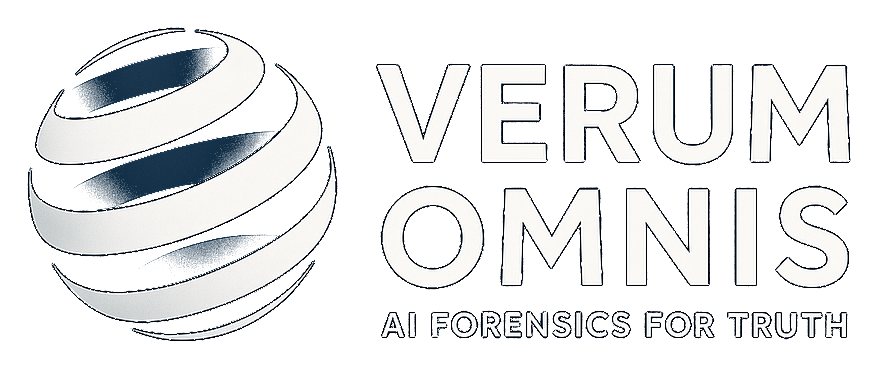

Forensic Investigator Workspace
Truth for All
For attorneys, banks and compliance teams. Load evidence, read a sealed forensic report, and talk to Verum Omnis about your case. Everything that enters or leaves is cryptographically sealed — if it isn't sealed, Verum Omnis never said it.

1 · Load & Seal Evidence
Upload documents (PDF/TXT). Each file is sealed into the vault (SHA-512 chain of custody) on upload, then analysed into anchored evidence atoms and contradictions. Deterministic and offline — nothing leaves your machine.
Raw findings JSON and the sealed PDF are saved to the vault
(vault/findings/, vault/sealed/). This on-screen copy
closes when you leave the page.
Contradiction index (0) — quick anchors
3 · Ask Verum Omnis
A forensic-investigator assistant with persistent case memory — it reads the sealed vault every turn, so it always knows your case. Ask about the evidence, research the issue, or draft a letter. Seal any answer you want to rely on: an unsealed answer is not Verum Omnis speaking. Uses a local LLM (Ollama) when configured; deterministic otherwise.
Verify a Sealed Document
Re-compute the SHA-512 of any sealed PDF and check it against the anchored fingerprint, then confirm the OpenTimestamps anchor. Fresh seals show pending until the blockchain confirms.